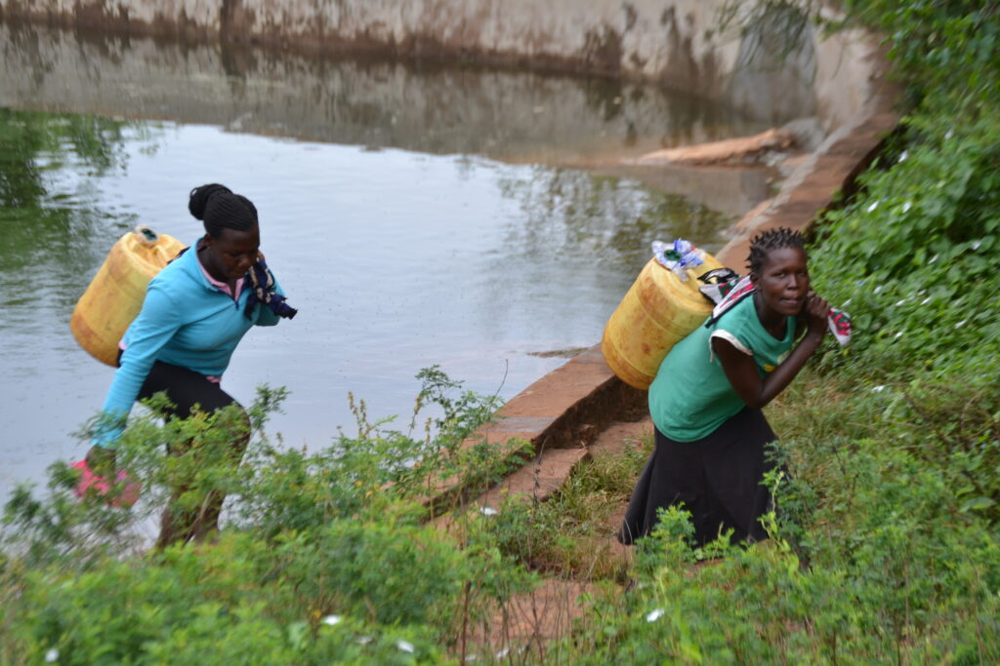
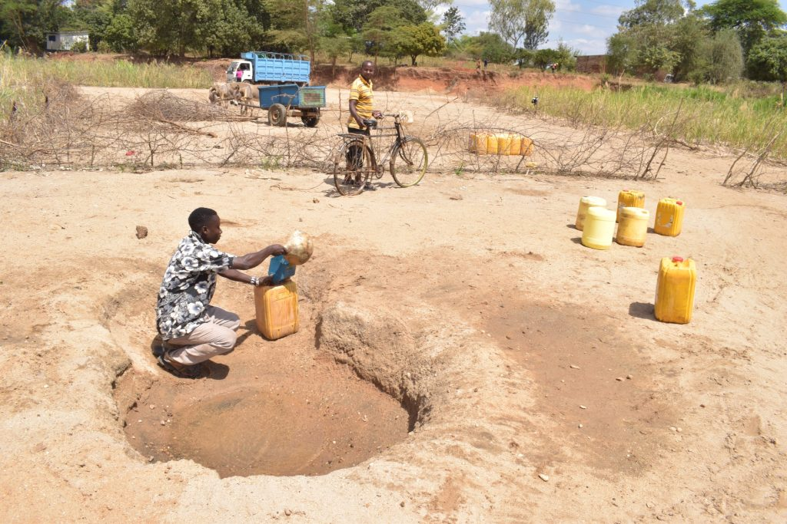
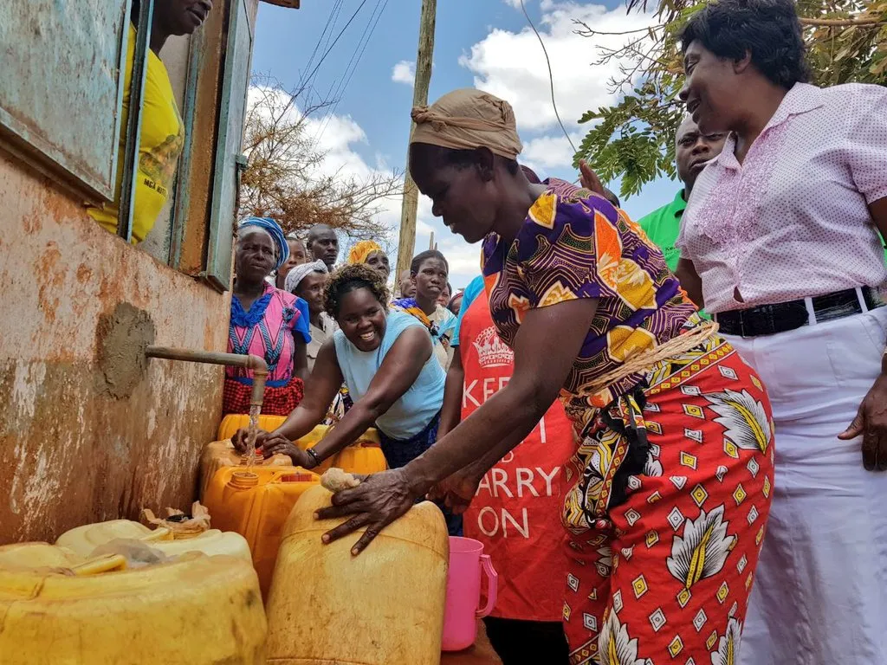
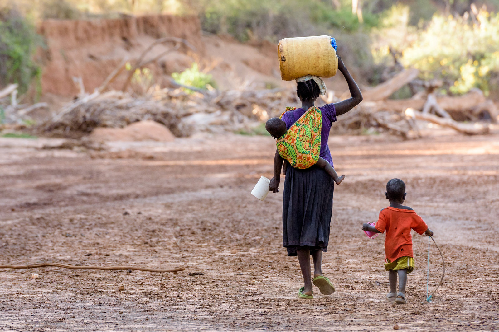
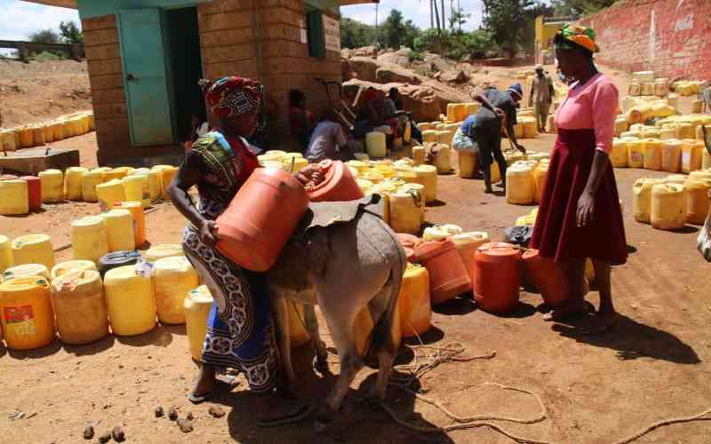
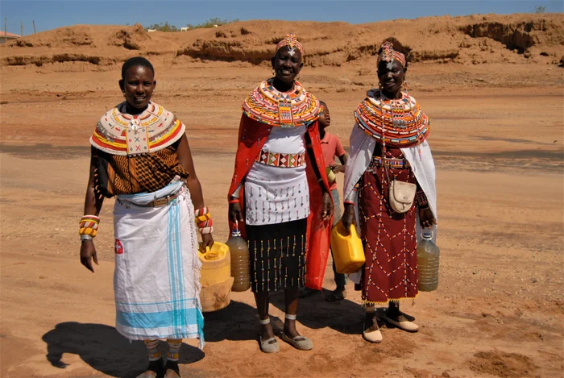
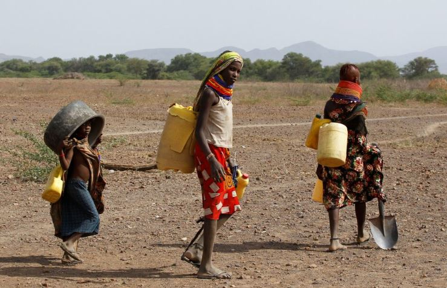

"When you are sleeping, you are thinking of how you will fetch water.
You wake up early to fetch water, even at three in the morning."
— GA Nyahera, HIV- undisclosed, lactating, child >6mo

"He doesn’t want to fetch water or be seen by people fetching water."
— PV Rongo, HIV-, pregnant

"Instead of going to work, you go looking for water."
— GA Rongo, HIV+ pregnant (006)

"Look at the surroundings [of the well], it is very bushy, anything can get in.
A small girl is fetching water, what if she falls in?"
— FGD Rongo

"You may get visitors asking for drinking water, you will tell them you don’t have it
and they will ask themselves what kind of life you lead if you do not even have drinking water."
— GA Migori, HIV+, lactating, child

"I think the cause of her miscarriage is the hustle she went through to get water."
— GA Macalder, HIV+, pregnant <6mo

